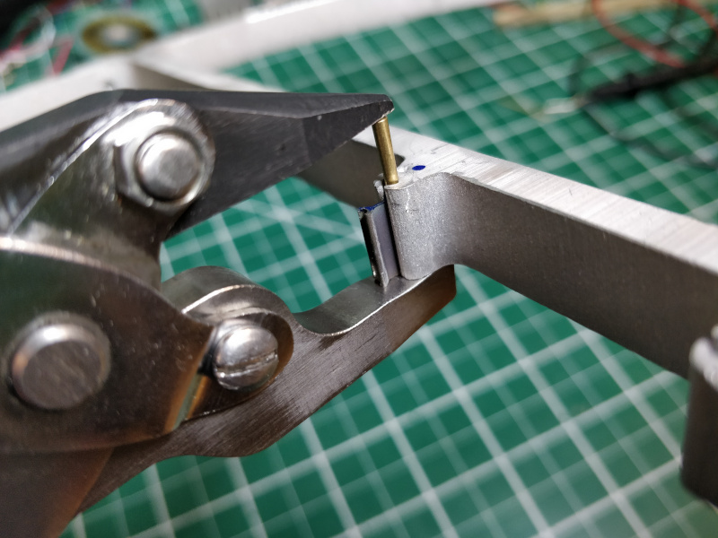
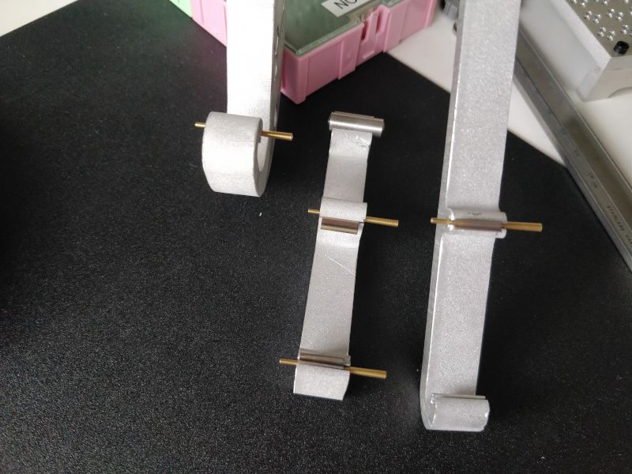
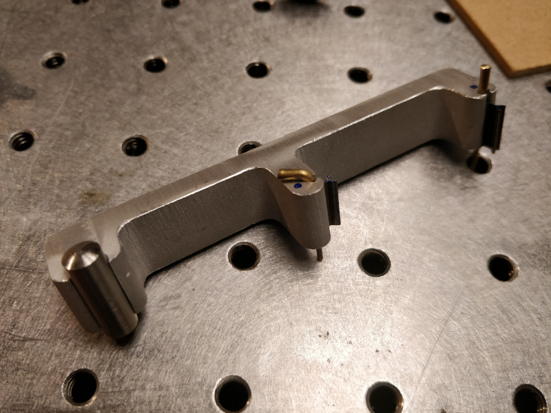
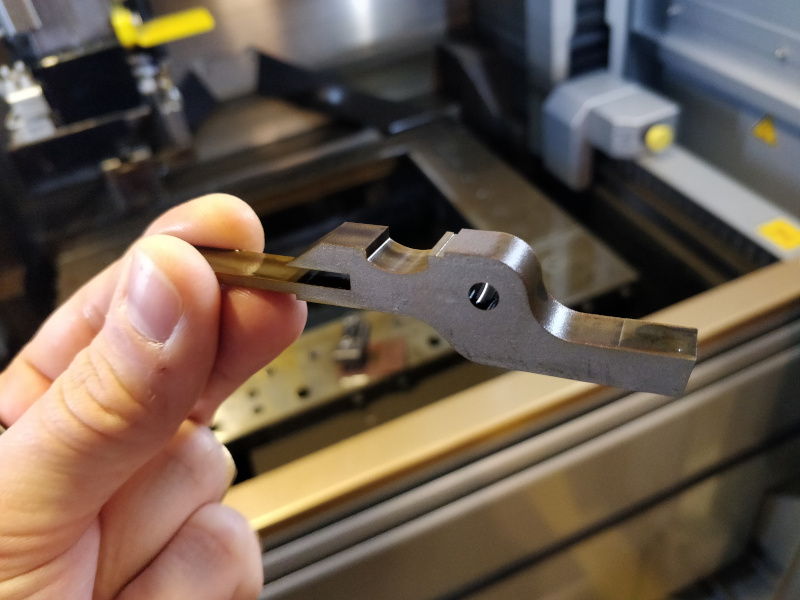
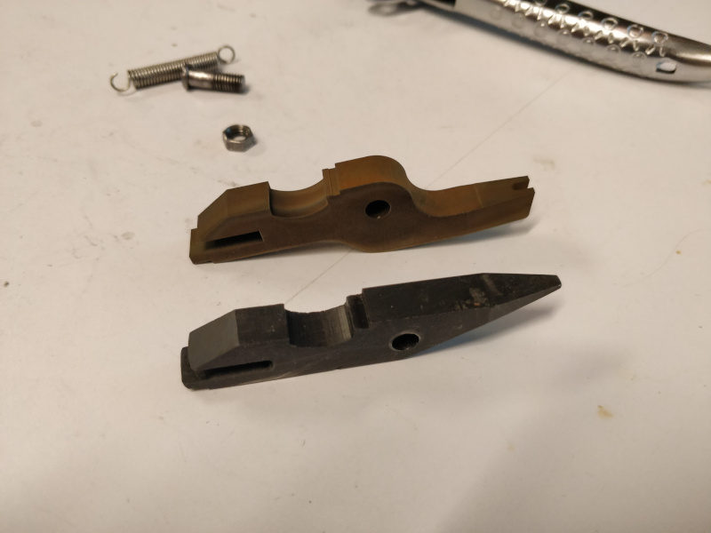
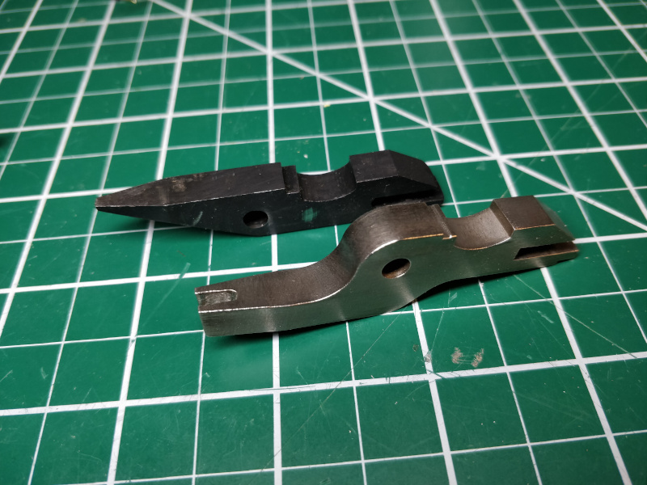

Pinsetter
Up to now, I have used 1/2" 18-8 stainless 7/0 taper pins from McMaster-Carr to assemble flexural mechanisms. These pins are relatively expensive at $0.65 ea, although they are generally reusable if I don't bang them up too much during installation. Another issue is length; they sit flush on either end in 1/2" aluminum plate, so a narrow punch is required for installation and removal. I can get longer 3/4" pins from McMaster for the same price, and the price drops by half if I switch to carbon steel, but another solution is to leverage the mechanical clock industry. They use brass taper pins by the bucketfull for precision assembly tasks, and 0.044" x 0.075" x 1" (i.e long 7/0) pins are only $0.08 each from Ronell. Installed finger-tight, they stick out a bit on each side:

Sunk home with a hammer, they still stick out from both sides. I did notice that removed pins show a bit more wear than the stainless ones, since they're much softer, but even if these can't be reliably reused they're probably worthwhile.
Installing taper pins with a hammer is fun, but it's also imprecise and can easily damage flexures and frames. Worse, the method requires a perforated backup plate that provides clearance for the pin while keeping the flexure and the frame aligned. This is simple enough for small assemblies, but proved challenging when assembling the 9-flexure ~0.5 m 3-RRR compliant parallel manipulator. A simple hand tool that one can quickly align and squeeze to set pins would be nice; ideally, it would also function as a pin remover by simply flipping the tool 180 degrees. Building such a tool also opens the ever-tempting door to recursion; if the pinsetter itself used modular superelastic flexures as its pivots, it could be used to assemble "child" pinsetters given suitable parts and labor.
Alas, exponential pinsetters will remain elusive for the time being. As a quick test, I tried squeezing a taper pin home using a pair of channel-lock pliers. Since they (and most other pliers) don't maintain parallel jaws through their range of motion, the pin experiences significant off-axis forces which result in binding at the dovetail "ears", and in some cases, pin deformation:

As I've explored previously, using pivots to produce linear motion is possible but complex. Commercial parallel-jaw pliers (a delightfully useful tool) use a few pivots and two sliders. We have two pairs, so I took one set apart:
I sunk a handful of brass pins and found that I need a range of 4 to 9 mm above the 12.7 mm frame to both install and remove a pin. I measured a jaw from the disassembled pliers and modeled a modified version in CAD, increasing its opening range and including a rounded cutout for the pin. I cut the part on the wire-EDM (another delightfully useful tool) from a bar of 17-4; the first operation created the jaw profile with a mounting tang for the next cut:

... and the second operation added the pin notch and brought the jaw to final dimension:

To save time and wire, I only ran the parts through the wire-EDM once; subsequent skim passes would have improved surface finish. Instead, I hit the part with a wire wheel to shine it up a bit:

Assembled and lubricated with a bit of lithium grease, the pinsetter works well for both assembly and disassembly:
It's not perfect; you can see the thin end of the brass taper pin bend a bit during disassembly in the video clip above. The parallel jaw pliers do a good enough job keeping the jaws parallel, but squeezing the joint together does translate both jaws a bit which must be carefully watched by the user to avoid binding. I found if I paid attention during disassembly it was quite reliable, but whenever I tried to demonstrate the system to someone (and often when I videotaped the process) I ended up bending a pin. Fortunately, assembly is quite a bit more reliable since the tool presses down on the thick end of the taper pin. Now that I have this tool, I can re-assemble the 3-RRR and continue calibration work. Or maybe find excuses to wire-EDM more things.